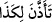

olmama “şükrederseniz, elbette size” muhabbet nîmetini “artırırım. Eğer” muhabbete
“şükrederseniz, elbette size” Benim size muhabbetim nîmetini “artırırım. Eğer”
Benim size muhabbetime “şükrederseniz, elbette size” Bana cezbe nîmetini “artırırım.
Eğer” cezbeye “şükrederseniz, elbette size” bakâ nîmetini “artırırım. Eğer” bakâya
“şükrederseniz, elbette size” vahdet nîmetini “artırırım. Eğer” vahdete
“şükrederseniz, elbette size” şükre sabır, sabra şükür, sabra sabır ve şükre şükür
nîmetini “artırırım.” Böylece çok sabreden ve çok şükreden kişiler olursunuz.”
“Ve eğer nankörlük ederseniz hiç şüphesiz azâbım çok şiddetlidir!” yâni nîmetîme
şükretmez, onu nankörlük ve nisyanla karşılarsanız, size muhakkak sûrette azab ederim!
“diye bildirmişti.” Kesin olarak, bir şüphe şâibesi bulunmaksızın gâyet açık bir şekilde
bildirmişti. Halil (b. Ahmed) der ki: “ demek, o fiili kendisine vacip kıldı,
demektir.” O zaman mânâ: “Rabbiniz kendisine vâcib kıldı” olur.
“Azâbım çok şiddetlidir!” ifâdesi, hazfedilmiş/âyetin ibâresinde bulunmayan cevabın
illetini göstermektedir. Ya da bu cevap “Umulur ki o azabdan size ulaşacak olan ulaşır.”
şeklinde olabilir.
Cömerd kimselerin âdeti, vaadlerini açıkça söylemek, tehdidlerini ise üstü kapalı
olarak ifâde etmektir. O halde siz varın cömertlerin cömerdini bir düşünün. O: “size
azâbım çok şiddetlidir!” buyurmadı. Bunun benzeri şu âyettir: “Kullarıma benim çok
bağışlayıcı ve pek esirgeyici olduğumu haber ver. Benim azâbımın elem verici bir
azap olduğunu da bildir.” (el-Hicr, 15/49-50)
Müfti Sa‘dî şöyle der: “Kur’ân’da alışagelen üslûb şudur: Allah Teâlâ hayırlı bir
fiili zikrettiği zaman onu kendi yüce ve mukaddes zâtına isnad eder. Ondan sonra azâbı
zikrettiği zaman ise azâbı kendine nisbet etmekten vazgeçer. Bu terkibe burada da riâyet
ederek önceki durumla ilgili olarak: “elbette size (nîmetimi) artırırım”, ikinci durumla
ilgili olarak ise “hiç şüphesiz azâbım çok şiddetlidir!” buyurmuştur. Yoksa “mutlaka
size azâb edeceğim.” buyurmamıştır.”
Sonra dünyâda azâbın şiddeti nîmetlerin çekilip alınmasıyla, âhirette ise cehennem
azâbıyladır.
et-Te’vîlâtü’n-Necmiyye’de şöyle denilmiştir: “Bana erme çabasını terk ederek
Ben’den ayrı kalma azâbı çok şiddetlidir. Çünkü dünyâ ve âhiret nîmetlerinin elden
kaçırılması nefislere çok ağır gelir. Allah’a erme nîmetlerinin elden kaçırılması da
kalplere ve ruhlara çok daha ağır gelir.”
Bahru’l-ulûm’da der ki: “İsrâiloğulları, buzağıyı ilah edinmek ve sözü değiştirmek
sûretiyle Allah’ın nîmetlerine nankörlük ettiler, Allah da onlara ölüm ve vebâ ile azab
etti.”
Ebû Hüreyre (r.a.)’ın şöyle dediği rivâyet edilmiştir: “Kendisine altı şey nasip
edilen kimse altı şeyden de mahrum olmaz.
1- Şükür nasip edilen kimse nîmetin artmasından da mahrum kalmaz. Çünkü Allah: